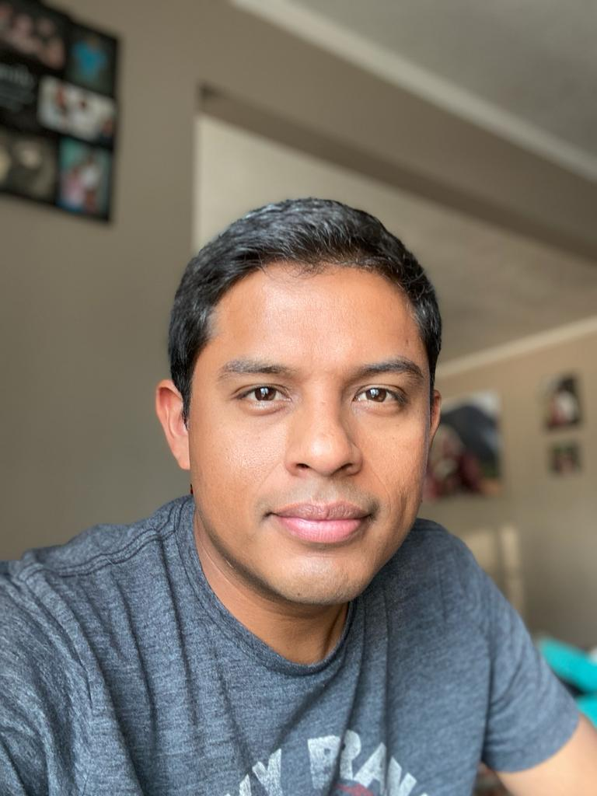

About
I am a customer service professional with seven years in the service industry over five of those years in a busy airport setting. In my previous position as an Airline Ground/Customer service professional with Horizon Air, I took on a number of duties daily including answering customer questions and helping people with their inquiries. I am familiar with common computer software used in the airline industry and I am adept at learning new skills quickly. I discover my passion for coding while working for Horizon Air. The technology use in the Airline industry made me question the “how” airline programs are built. This desire to learn coding made me pursue a career as a Software Developer. I am enrolled in the Software Development Program at College of Western Idaho. I am planning to obtain an Associate Degree in Software Development. This Fall 2023 I focused on learning C Sharp, HTML, and CSS. I have a friendly disposition and I am detail oriented and highly organized. I would enjoy the opportunity to bring that same level of dedication to the team at Company Name. I know you will find my qualifications to be exemplary and look forward to speaking with you in more detail about how I can benefit your company. Please contact me by phone or email at your earliest convenient. Thank you so very much!